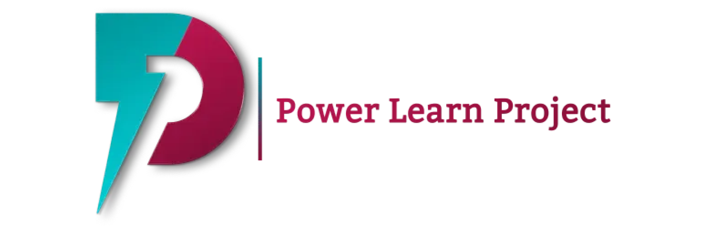
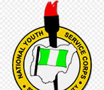
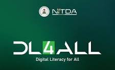
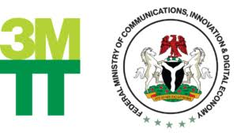
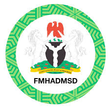
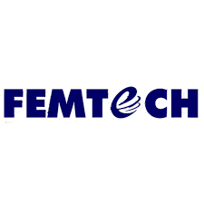
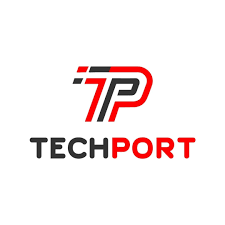

Hi, I'm Abdulraufu Wasiu Olamilekan
Software| Hardware Engineer
Download My CV
Software| Hardware Engineer
Download My CVI'm a passionate developer with expertise in web development, software | hardware engineering, and problem-solving. I love building scalable, user-friendly applications using the latest technologies.


A personal portfolio website to showcase my skills and projects. Built with HTML, CSS.
View ProjectThis a website that allow users to buy Electronics gadgets online, pay into to company accout and wait for delivery date
View ProjectThis device is powered by ardino programming Language .
View Project
Power Learn Project (PLP) is a Pan-African social impact organization on a mission to unlock Africa's potential by training 1 million developers. I'm part of july 2025 cohort.

To develop a sound and result oriented organization that is strongly committed to its set objectives particularly those of national unity and even development. An organization that is well motivated and capable of bringing out the best qualities in our youths and imparting in them the right attitude and values for nation-building. I served at Army Day Secondary School (Girls) Dukku Barack Birnin kebbi, kebbi state 2025

DL4ALL is an initiative empowering every citizen with the digital skills they need to thrive in today’s interconnected world. I was among the Traineer.

The 3 Million Technical Talent (3MTT) programme, a critical part of the Renewed Hope agenda, is aimed at building Nigeria's technical talent backbone. I was among those who undergo Cybersecurity trainee.

N-Power is a scheme set up by the former President of Nigeria, Muhammadu Buhari since 8 June 2016, to address the issues of youth unemployment and help increase social development. The scheme was created as a component of National Social Investment Program, to provide a structure for large scale and relevant work skills acquisition and development and to ensure that each participant will learn and practice most of what is necessary to find or create work.

As a trainee Engineer at Femtech, I was oppportune to gained practical experience on laptop repair (e.g Upgrading of operating system, Maintenance, Data recorvery, Fixing and Repairing), customer relation and communication skills. Thanks so much, FEMTECHIT.

During my tenure at Techport, I held the role of laptop technician and sales rep, where I played a key role in shaping the technical aspect and progress of the company, I provided technical leadership to a cross-functional team.
Feel free to reach out to me through any of the platforms below: